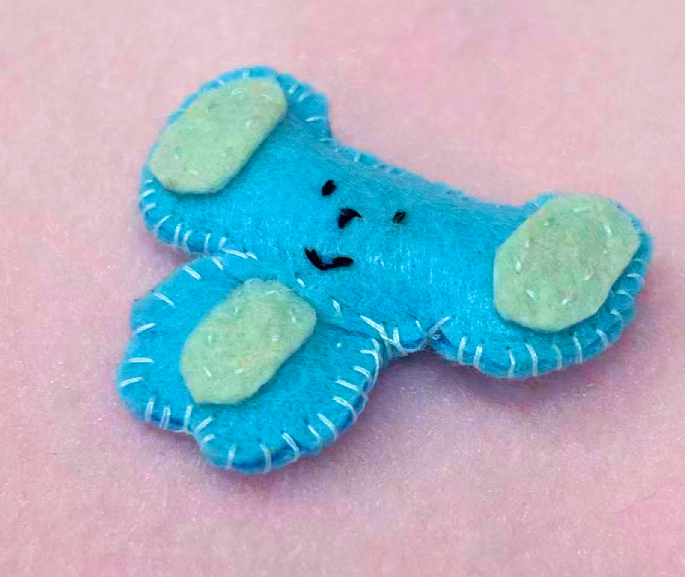
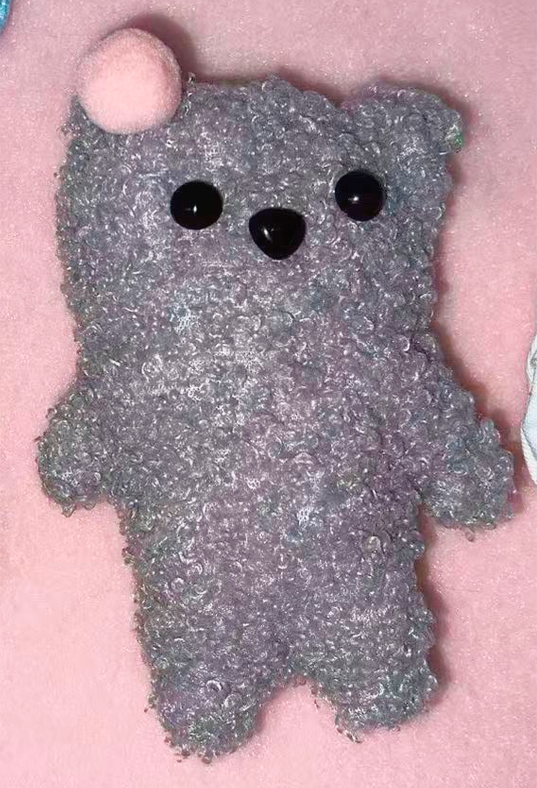
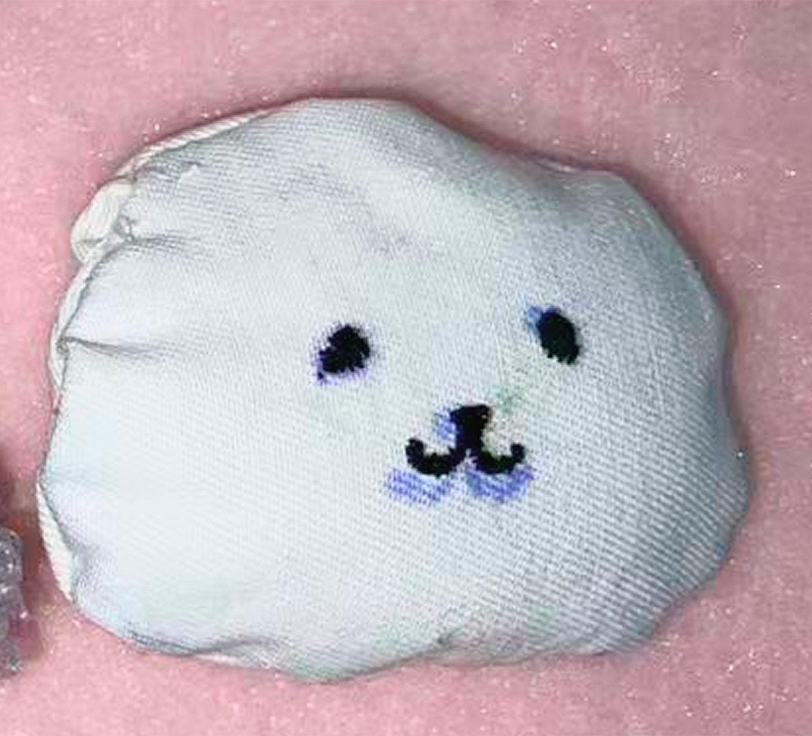
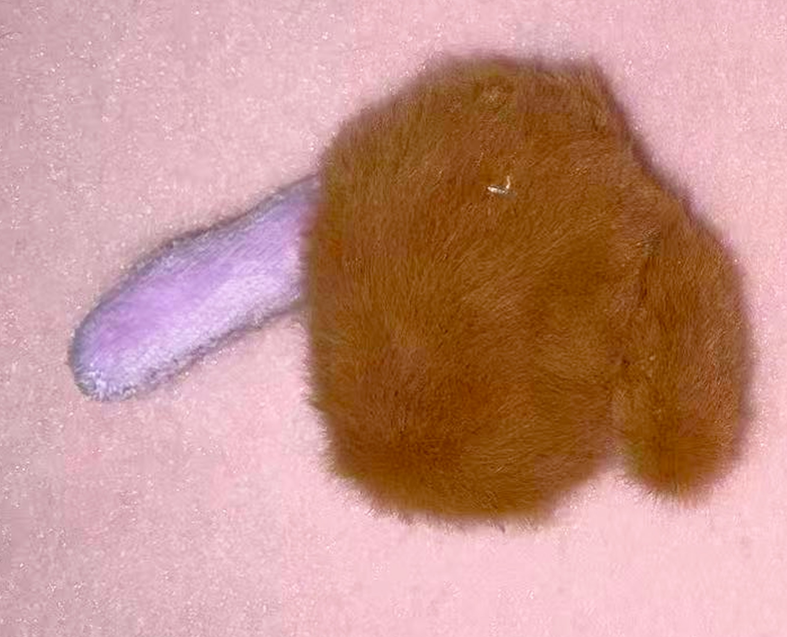
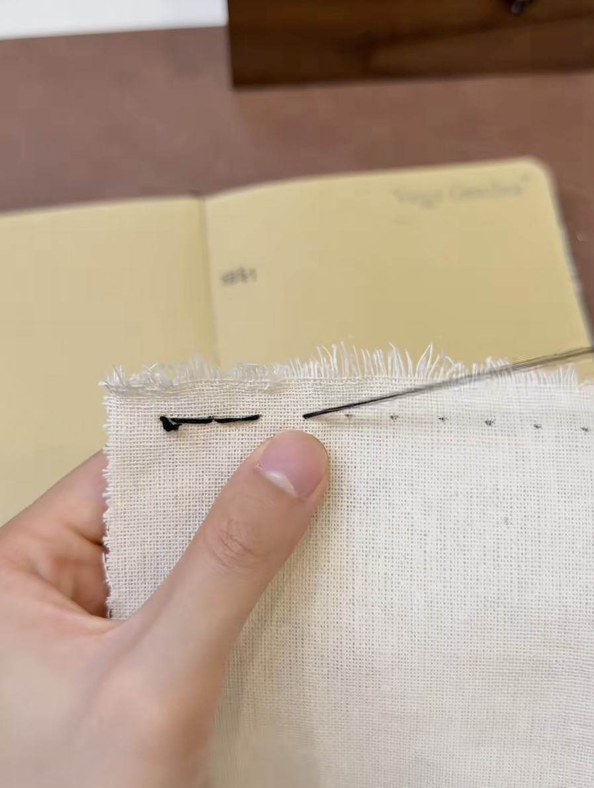
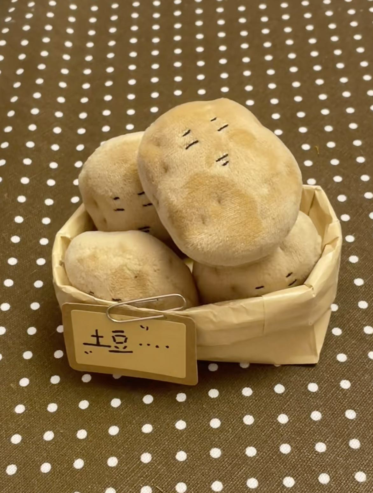
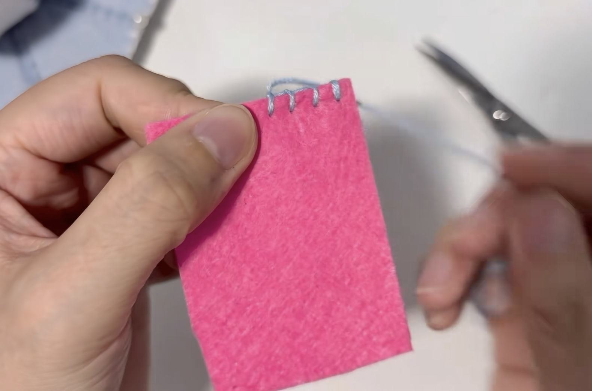

Method 1
Felt plushie
No turning inside out
- Running stitch
- Attach one felt piece directly onto another felt piece.
- Blanket stitch
- Sew visibly around the outside edge of the plushie.
Making guide
Method 1

Method 2
All three fabric plushies use running stitch and hidden stitch.



Video references

Needle techniques and knot-tying tutorial

How to sew a plush doll

Felt blanket stitch tutorial